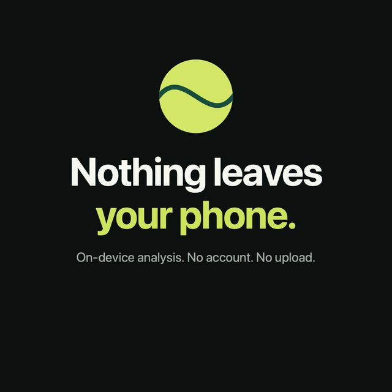

20 秒看效果
18:54 原片，37 个回合自动排好
一段手机直拍的真实打球录像，去掉捡球和走动，按精彩度排好回合，直接导出分享。
使用方法
三步出片，不用手动剪辑
一场球录像里大部分时间都在捡球和走动。RallyOnly 只帮你留下真正打球的部分。
像平时一样拍摄
把手机架在底线后方、尽量高一点，让整片球场和球员入镜，用系统相机正常录像即可。
选择录像
从照片图库或「文件」App 选好录像，设备本地自动找出每一分的起止，支持一次选多段录像依次处理。
回看、加记分牌、分享
直接看紧凑全场或自动集锦，微调切点、逐帧回看击球或点选比分，按 16:9、9:16 或 1:1 导出。
你会得到什么
打完球，真正愿意回看的录像
紧凑全场
保留每一个打球回合，去掉捡球和换边等待。
自动精彩集锦
自动挑出最值得看的高光回合，不中途切断，打完就能发给球友。
回合排序与发球列表
所有回合按精彩度排列，上下滑动切换，勾选组装自选合集；发球单独成表。
记分牌叠加
切到「比分模式」点一下谁赢这一分，支持从任意回合设比分；Pro 导出直接把记分牌叠在画面上。
逐帧拨轮
在视频右侧上下拨动，一帧一帧看清发球抛球、拉拍与击球瞬间。
专为分享打造
导出 16:9、9:16 或 1:1，可选片头卡；自选回合支持合并成一个视频，也可分别导出单个文件。
为什么球友选它
你的录像始终留在自己手里
- 视频不离开设备无需上传、无需账号，也不用等服务器排队处理。
- 请保留原始录像尚未单独保存的剪辑可能依赖原片播放；需要长期保留的片段请保存或导出。
- 绝不因为 App 崩溃丢比赛不接管录像，继续用系统相机拍，稳妥省心。
- 做好的视频永远属于你即使以后停止订阅，你导出或保存过的内容也不会被收回。

对比
只想自动剪回合，不想为用不上的功能买单？
SwingVision 功能很全，包括压线判定、球速、击球统计和 Apple Watch 记分。如果你平时最常用到的只是把捡球时间剪掉、加上比分做集锦，RallyOnly 只专注这一件事，价格也更轻。
| RallyOnly | SwingVision | |
|---|---|---|
| 自动剪掉等待、生成精彩集锦 | 支持 | 支持 |
| 记分牌叠加 | 支持（Pro 导出显示） | 支持 |
| 压线判定、球速、击球统计 | 不做 | 支持 |
| App 内录制 | 不接管：用系统相机拍完导入 | 支持 |
| 免费版 | 每月 4 场新录像，免费导出带水印 | 有限额 |
| 付费订阅（美区参考价） | $5.99/月 或 $44.99/年 | $14.99/月 或 $95.99/年起 |
| Android | 暂无 | 暂无 |
价格更新于 2026 年 11 月 21 日；各地区价格不同，实际售价以当地 App Store 显示为准。SwingVision 为 SwingVision, Inc. 商标，RallyOnly 为独立应用，与对方无关联。
拍摄建议
这样拍，剪得更干净
- 底线后方居中往后退几米，让双方球员和整片球场都在画面里。
- 尽量架高围网支架或把手机支在长椅包上，都比放地面效果好得多。
- 避开球网侧面球员从镜头前走过时，任何视角都容易和打球混淆。
- 横屏竖屏均可两者都支持，横屏更适合拍全整片球场。
常见问题
下载前先了解
视频会上传到服务器吗？
不会。RallyOnly 在你的设备本地完成分析，不上传视频，也无需注册账号。详见 隐私政策（英文）。
处理一场录像需要多久？
取决于你的设备型号、录像时长和格式。分析期间请保持 App 打开。
如何给比赛视频加上记分牌？
在回合页面切到「比分模式」，每一分点一下谁赢即可，也可以从任意回合「设比分」开始。Pro 导出的视频会直接叠加记分牌。
如果某个回合切早了或切晚了怎么办？
点开任意回合即可按 1 秒或 3 秒微调起止时间，还可以用右侧的逐帧拨轮逐帧查看击球瞬间。遇到问题也欢迎发邮件给我们：rallyonly.feedback@gmail.com。
支持 GoPro 或其他运动相机拍的录像吗？
支持。只要在照片图库里即可导入；1.40 版本起还支持从「文件」App 导入以及在 Mac 上直接选择本地视频文件。
是免费的吗？
每月免费处理 4 场新录像，免费导出带水印。RallyOnly Pro 可解除每月次数限制、去除水印并支持导出带记分牌的视频，新订阅用户可享免费试用。
支持 Android 吗？
目前仅通过 Apple App Store 分发（支持 iPhone；1.40 版本新增 iPad 和 Apple 芯片 Mac），暂无 Android 版本。